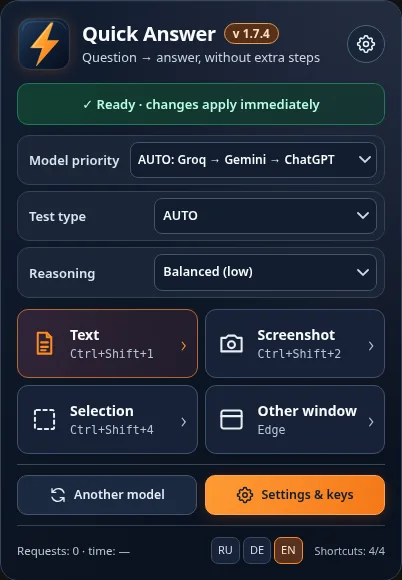
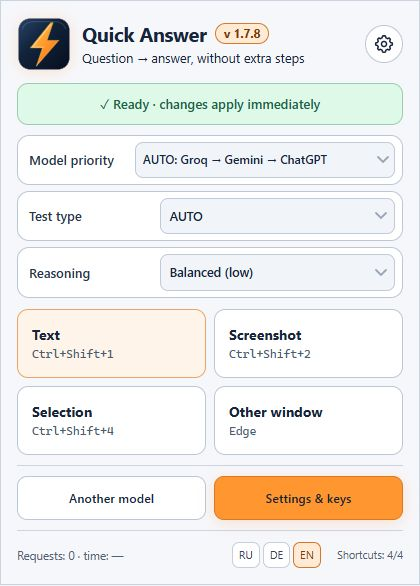

Edge extension 1.7.8
Can be loaded as an unpacked extension and is in use by the project author. It has not been tested against every provider and school website.
Quick Answer is a study assistant for self-checking and exam preparation. The rules of your school or university apply: using it in exams, written tests or graded assessments is prohibited.
The Edge extension reads the text or a screenshot of a page, asks an AI provider with your own key and shows a short answer with a reason you can check. It never clicks anything automatically.
Edge extension · 1.7.8 Microsoft Edge · WindowsBefore you startMicrosoft Edge and your own Groq or Gemini keys. Questions and images go to the selected provider.


Installation, features, privacy, checks.
As in the guide: download the ZIP, extract it, load it in Edge.
Questions and images go to the selected AI provider. You need your own keys; the extension works neither locally nor offline and collects no statistics.
Two separate builds with different levels of testing.
Can be loaded as an unpacked extension and is in use by the project author. It has not been tested against every provider and school website.
Extract the desktop archive and run START_QuickAnswer.cmd. Requires Windows 10/11, Windows PowerShell 5.1, WinForms and .NET Framework. No compiled EXE is supplied. Ctrl+Alt+1 captures the screen, Ctrl+Alt+2 the foreground window, Ctrl+Alt+4 a region. Keys use DPAPI CurrentUser. Images go to the selected provider. Runtime, providers, DPI and hotkeys have not been verified. The bundled Bridge accepts browser extension origins only; desktop is currently incompatible with it.
Desktop 0.1: source only, no EXE; Windows launch not verified.
The guide takes you in five steps from installation to keys and diagnostics.